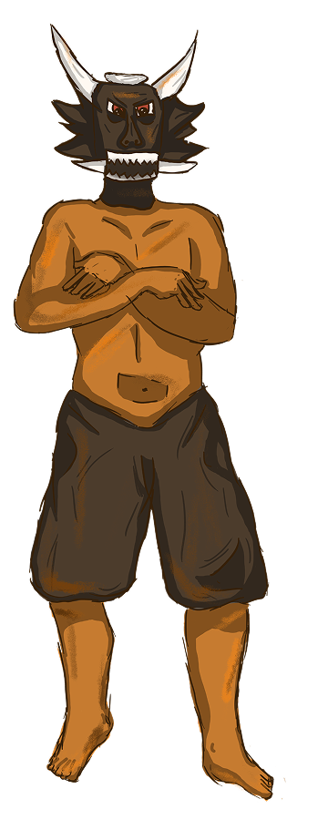
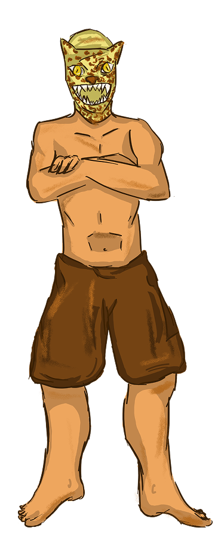
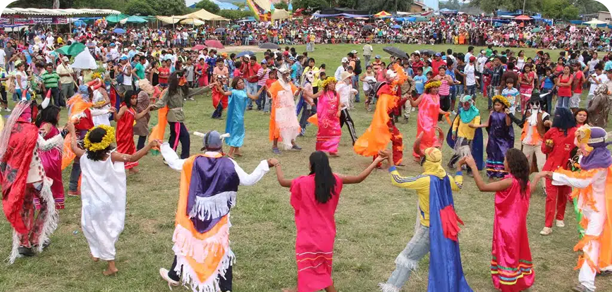
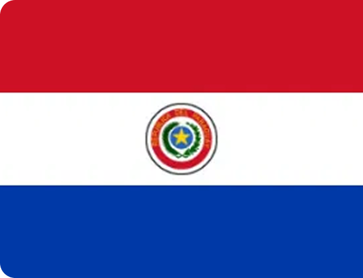
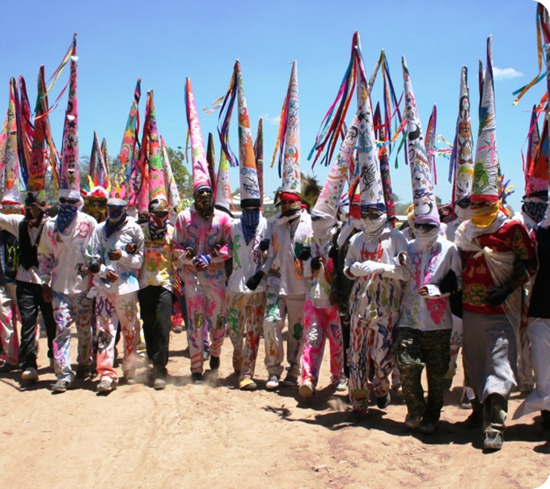

PARAGUAI
Festa de La Tirana
Toro-Toro

O Toro-Toro realiza movimentos agressivos e investidas semelhantes às de um touro real. Entre suas características estão: correr em direção aos participantes; simular ataques e perseguições; provocar o público durante o ritual; representar força física e dominação. Sua atuação cria tensão dramática dentro da encenação e prepara o confronto com o Jaguar.
O Toro-Toro simboliza a chegada da cultura ocidental e dos colonizadores europeus. A figura do touro está associada à invasão colonial, à imposição de novos costumes e ao domínio exercido sobre os povos indígenas.
O Jaguar entra posteriormente na roda ritual. Sua dança é inspirada no comportamento do felino e inclui: movimentos furtivos; aproximações lentas; saltos rápidos; gestos de caça; confrontos corporais simbólicos com o Toro. A luta entre ambos acontece diante da comunidade e representa a resistência indígena frente à invasão cultural. O desfecho tradicional sempre favorece o Jaguar.
Já o Jaguar-Jaguar (Jagua Jagua ou Yaguareté) representa a força ancestral guarani, a ligação espiritual com a natureza e a resistência cultural dos povos indígenas. O jaguar é um dos animais mais importantes da cosmologia sul-americana e aparece como símbolo de coragem, proteção e poder espiritual.
Jaguar-Jaguar


O Arete Guazú é uma festividade do povo Guarani Ocidental, celebrada entre os dias 26 e 28 de fevereiro. A celebração reúne pessoas de todas as idades para honrar a vida e os espíritos ancestrais, com danças ao som de flautas e tambores, simbolizando união e reencontro ancestral. O evento também tem a participação de outros povos indígenas, como os Manjui e Nivaclé. Os preparativos começam dias antes, com o Atiku, e no início da celebração destacam-se elementos simbólicos como o Ndechi Ndechi, traje que representa espíritos anciões, e as máscaras (agueró), que simbolizam familiares falecidos que retornam para celebrar junto aos vivos. No último dia, acontecem rituais como o kuchi kuchi e encenações com personagens de animais.

O Paraguai guarda uma das mais fortes presenças indígenas da América do Sul. O país possui duas línguas oficiais, espanhol e guarani, sendo este último falado pela maior parte da população. Sua história inclui processos coloniais, guerras devastadoras e longos períodos autoritários, como a ditadura de Alfredo Stroessner.
O Arete Guasu é uma das mais importantes manifestações da cultura guarani. A celebração homenageia os ancestrais e fortalece os vínculos comunitários por meio de máscaras, danças e encenações. A luta simbólica entre o Jaguar e o Touro representa o confronto entre a cultura indígena e a colonização europeia, reafirmando a permanência da identidade guarani ao longo do tempo.
